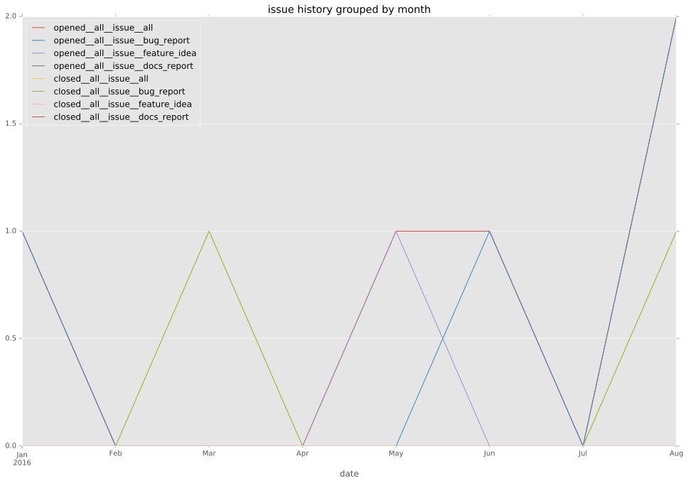

total issue counts
feature pull request: 1
pullrequest: 3
bugfix pull request: 2
feature idea: 1
issue: 5
bug report: 4
issue history

days open by issue type
bugfix pull request
count: 3
std: 13.8564064606
min: 0
max: 24
median: 24.0
mean: 16.0
all
count: 5
std: 27.3678643668
min: 0
max: 67
median: 24.0
mean: 23.0
pullrequest
count: 0
std: nan
min: nan
max: nan
median: nan
mean: nan
feature pull request
count: 0
std: nan
min: nan
max: nan
median: nan
mean: nan
feature idea
count: 0
std: nan
min: nan
max: nan
median: nan
mean: nan
issue
count: 0
std: nan
min: nan
max: nan
median: nan
mean: nan
bug report
count: 2
std: 47.3761543395
min: 0
max: 67
median: 33.5
mean: 33.5
closures grouped by total days open